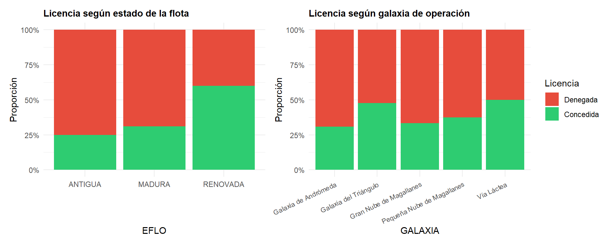
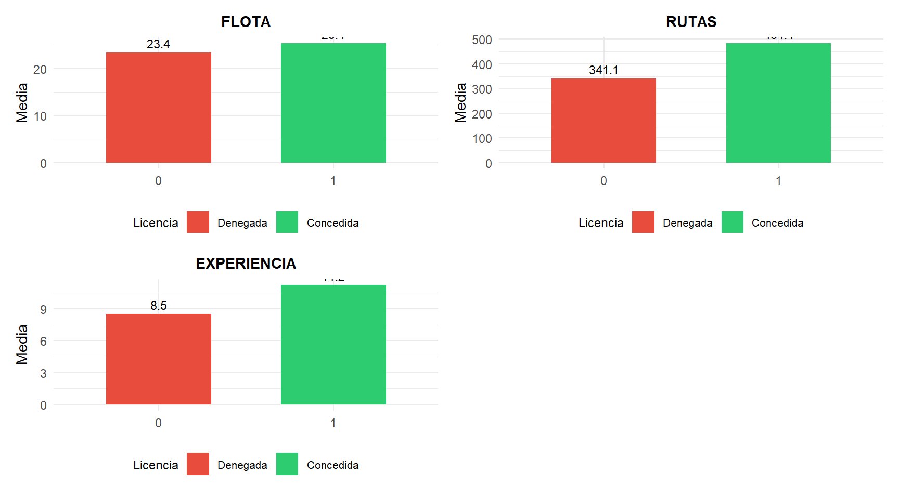
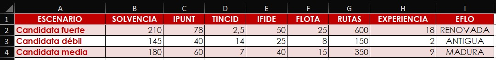

10 Modelos de Elección Discreta.
Figura 10.1. Concedida o denegada: la decisión como variable.
10.1  Introducción.
Introducción.
En los capítulos anteriores hemos trabajado con modelos en los que la variable dependiente es de naturaleza métrica (continua): la rentabilidad económica de una empresa, el beneficio por cada mil años-luz recorridos, un índice de satisfacción… En todos esos casos, la variable que queremos explicar puede tomar, en principio, cualquier valor dentro de un rango continuo, y los modelos de regresión lineal resultan adecuados para modelizar su comportamiento.
Sin embargo, en muchas situaciones reales del entorno empresarial, la variable que deseamos explicar no es continua, sino categórica: un banco concede o deniega un crédito, un consumidor compra o no un producto, una empresa pertenece a un sector u otro, un regulador otorga o rechaza una licencia. En todos estos casos, el resultado de la decisión es una categoría, no una cifra. La variable dependiente toma un número finito de valores discretos que representan las alternativas posibles, y lo que interesa modelizar es la probabilidad de que un individuo o caso pertenezca a una u otra categoría en función de un conjunto de variables explicativas.
La necesidad de interpretar económicamente estas pautas de comportamiento de los agentes económicos ha originado el desarrollo de la modelización microeconométrica. Los modelos microeconométricos ayudan a explicar las decisiones que los agentes del entorno de la empresa toman ante diferentes estímulos concretados en variables o atributos. En definitiva, intentan objetivar la toma de decisiones de los agentes económicos.
10.2 Clasificación de los modelos de elección discreta.
Los modelos de elección discreta constituyen una familia amplia de técnicas que se clasifican según las características de la variable dependiente:
Modelos de respuesta binaria: la variable dependiente presenta solo dos alternativas, codificadas como 0 y 1. Por ejemplo: conceder o no un crédito, comprar o no un producto, obtener o no una licencia. Son los modelos más sencillos y frecuentes.
-
Modelos de respuesta múltiple: la variable dependiente admite más de dos categorías. A su vez, se subdividen en:
Multinomiales: las categorías no tienen un orden natural (por ejemplo, elegir entre tres marcas).
Ordenados: las categorías responden a una escala ordinal (por ejemplo, grado de satisfacción: bajo, medio, alto).
En este capítulo nos centraremos en los modelos de respuesta binaria y, dentro de ellos, en el modelo logit binomial, que es el más utilizado en la práctica por la facilidad de su especificación, estimación e interpretación.
10.3 El modelo de respuesta binaria.
10.3.1 Planteamiento general.
Supongamos una variable dependiente categórica \(Y\) que puede tomar valores 0 ó 1, y un conjunto de \(k\) variables explicativas \(X_1, X_2, \ldots, X_k\). El objetivo es determinar:
\[ P[Y = 1 \,/\, X_1, X_2, \ldots, X_k] \]
Es decir, la probabilidad de que la variable dependiente tome el valor 1 (pertenencia al grupo de interés) condicionada a los valores de las variables explicativas. Naturalmente, \(P[Y = 0 \,/\, X_1, \ldots, X_k] = 1 - P[Y = 1 \,/\, X_1, \ldots, X_k]\).
Para relacionar la probabilidad con el valor de las variables explicativas, construimos una función de enlace que incorpora una función de distribución de probabilidad subyacente:
\[ P[Y = 1 \,/\, X_1, X_2, \ldots, X_k] = f(X_1, X_2, \ldots, X_k; \beta) \]
donde \(\beta\) es el vector de los \(k\) parámetros estructurales del modelo. En la función de enlace supondremos que las variables independientes actúan siguiendo un esquema lineal:
\[ f(X_1, X_2, \ldots, X_k; \beta) = f(X_1\beta_1 + X_2\beta_2 + \cdots + X_k\beta_k) \]
y el modelo a estimar será:
\[ y = f(X_1\beta_1 + X_2\beta_2 + \cdots + X_k\beta_k) + \varepsilon \]
donde \(y\) es la variable dependiente (0 ó 1) y \(\varepsilon\) es la perturbación aleatoria.
10.3.2 La función de enlace: logit y probit.
La forma funcional concreta de la función de enlace depende de la distribución de probabilidad que asumamos para el comportamiento de la variable \(Y\). Aunque la verdadera naturaleza de \(Y\) es discreta, asumimos para ella una distribución de probabilidad continua:
Modelo logit: suponemos que la variable dependiente sigue una distribución de probabilidad que se ajusta a una curva logística.
Modelo probit: suponemos que la variable dependiente sigue una distribución de probabilidad que se ajusta a una distribución normal.
En general, ambos modelos aportan soluciones similares en la mayoría de los casos. A nivel práctico, suelen utilizarse más los modelos logit, al ser menos dificultosa su especificación e interpretación de resultados. Por ello, el resto del capítulo se centrará en el modelo logit.
10.4 El modelo logit binomial.
10.4.1 Especificación.
En el modelo logit binomial, la función de enlace adopta la forma de la función logística:
\[ y_i = \frac{1}{1 + e^{-(\alpha + x_i\beta)}} + \varepsilon_i \]
Bajo las hipótesis básicas habituales (el error sigue una distribución normal de media cero, tiene varianza constante y no está autocorrelacionado), la probabilidad de que la variable dependiente tome el valor 1 viene dada por:
\[ P(y_i = 1 \,/\, x_i) = E(Y) = \frac{1}{1 + e^{-(\alpha + x_i\beta)}} \]
y la probabilidad estimada, una vez obtenidos los parámetros del modelo, será:
\[ \hat{P}(y_i = 1 \,/\, x_i) = \frac{1}{1 + e^{-(\hat{\alpha} + x_i\hat{\beta})}} \]
Los parámetros se estiman mediante el método de máxima verosimilitud, a diferencia de la regresión lineal, donde se emplea mínimos cuadrados ordinarios (MCO).
10.4.2 Contraste de significación individual: contraste de Wald.
Para contrastar si un parámetro individual es significativamente distinto de cero, se utiliza el contraste de Wald, que desempeña en el modelo logit un papel análogo al del contraste t en la regresión lineal. La hipótesis nula es \(H_0: \beta_j = 0\), y el estadístico de contraste es:
\[ z = \frac{\hat{\beta}_j}{\text{SE}(\hat{\beta}_j)} \]
que, bajo \(H_0\), sigue una distribución normal estándar. Si el p-valor asociado es inferior al nivel de significación elegido (por ejemplo, 0,05), se rechaza \(H_0\) y se concluye que la variable es estadísticamente significativa.
Cuando una variable explicativa es un factor con más de dos niveles (por ejemplo, EFLO con tres categorías: ANTIGUA, MADURA, RENOVADA), el modelo genera varias variables dummy. Es posible que ninguna de ellas sea individualmente significativa, pero que el factor en su conjunto sí lo sea. Para comprobarlo, se aplica el contraste de Wald conjunto, que evalúa simultáneamente la hipótesis \(H_0: \beta_{\text{MADURA}} = \beta_{\text{RENOVADA}} = 0\).
10.4.3 Medidas de la bondad del ajuste.
La evaluación de la calidad de un modelo logit difiere de la regresión lineal. No existe un \(R^2\) clásico, pero sí varios indicadores alternativos:
Porcentaje de predicciones correctas: se compara la clasificación predicha por el modelo (asignando al grupo 1 los casos con probabilidad estimada \(\geq 0,5\)) con la pertenencia real. Es una medida intuitiva, pero puede ser engañosa cuando los grupos están muy desbalanceados.
Pseudo \(R^2\) de Nagelkerke: es una adaptación del coeficiente de determinación para modelos estimados por máxima verosimilitud. Se calcula a partir de las log-verosimilitudes del modelo completo (\(L_1\)) y del modelo nulo (\(L_0\)):
\[ R^2_{\text{Nagelkerke}} = \frac{1 - \exp\!\left(-\frac{2}{n}(L_1 - L_0)\right)}{1 - \exp\!\left(\frac{2}{n}\, L_0\right)} \]
Sus valores oscilan entre 0 y 1, y se interpreta de forma análoga al \(R^2\) ajustado: valores más altos indican mejor ajuste.
Criterio de información de Akaike (AIC): permite comparar modelos con distinto número de variables. Cuanto menor sea el AIC, mejor es la especificación del modelo.
Comparación de la devianza: la devianza mide la discrepancia entre el modelo estimado y un modelo saturado. La diferencia entre la devianza del modelo nulo y la del modelo completo se distribuye como una \(\chi^2\) y permite contrastar la significación conjunta del modelo.
10.4.4 Odd ratios: interpretación económica de los coeficientes.
En la regresión lineal, cada coeficiente indica directamente cuánto varía la variable dependiente cuando la explicativa se incrementa en una unidad. En el modelo logit, la interpretación no es tan directa, porque la relación entre las variables explicativas y la probabilidad no es lineal. Sin embargo, existe una transformación que facilita enormemente la lectura: el odd ratio.
El odd (o ventaja) del suceso \(Y = 1\) frente al suceso \(Y = 0\) se define como el cociente entre sus probabilidades:
\[ \frac{P(y_i = 1)}{P(y_i = 0)} = e^{\alpha + \beta_1 x_{i1} + \beta_2 x_{i2} + \cdots + \beta_k x_{ik}} \]
Cuando una variable \(x_k\) se incrementa en una unidad (manteniendo las demás constantes), la nueva ventaja se divide por la antigua, obteniéndose:
\[ \frac{\text{Ventaja nueva}}{\text{Ventaja antigua}} = e^{\beta_k} \]
El valor \(e^{\beta_k}\) se denomina odd ratio de la variable \(x_k\), y es el factor por el que se multiplica la ventaja cuando la variable se incrementa en una unidad:
Si \(\beta_k > 0\) (parámetro positivo), entonces \(e^{\beta_k} > 1\): la ventaja aumenta cuando aumenta la variable.
Si \(\beta_k < 0\) (parámetro negativo), entonces \(e^{\beta_k} < 1\): la ventaja disminuye cuando aumenta la variable.
El cambio porcentual en la ventaja se calcula como \((e^{\beta_k} - 1) \times 100\%\).
10.5  Práctica: ¿qué determina la concesión de licencias en el sector interestelar?
Práctica: ¿qué determina la concesión de licencias en el sector interestelar?
10.5.1  La ruta Coruscant–Arrakis.
La ruta Coruscant–Arrakis.
La ruta comercial entre los planetas Coruscant (en la Galaxia de Andrómeda) y Arrakis (en la Gran Nube de Magallanes) se ha consolidado en los últimos años como una de las más rentables del sector del transporte interestelar de mercancías. La expansión del tráfico comercial entre ambos planetas —impulsada por el crecimiento de la demanda de especia y componentes tecnológicos— ha atraído el interés de numerosas compañías navieras.
La Autoridad Galáctica de Transporte Interestelar (AGTI), organismo regulador del sector, gestiona la concesión de licencias de operación para esta ruta. De las 100 compañías que solicitaron operar en la ruta Coruscant–Arrakis, la AGTI concedió la licencia a 40 y la denegó a 60, basándose en una evaluación de múltiples indicadores financieros, operativos y de calidad de servicio.
Ante la previsión de que se convoque un nuevo concurso de licencias para atender la creciente demanda, un equipo de analistas de la consultora Data-Evidence ha decidido construir un modelo logit binomial que permita identificar qué factores determinan la concesión o denegación de la licencia. Este modelo será útil tanto para las compañías que deseen evaluar sus posibilidades como para la propia AGTI como herramienta de apoyo a la decisión.
10.5.2 Preparación de los datos.
Para llevar a cabo la práctica, necesitamos dos archivos en la carpeta de nuestro proyecto:
El archivo de datos licencias_100.xlsx, que contiene tres hojas: una con un aviso sobre la naturaleza ficticia de los datos, otra con la descripción de las variables y una tercera (hoja “Datos”) con los datos de las 100 compañías solicitantes.
El script logit_rstars.R, con el código que iremos ejecutando paso a paso.
Además, para la simulación de escenarios, utilizaremos el archivo escenarios_logit_rstars.xlsx.
Como es habitual, la primera parte del script está dedicada a la limpieza de la memoria y a la carga de los paquetes necesarios:
# Limpiando el Environment de objetos
rm(list = ls())
# Cargando paquetes
library(readxl)
library(dplyr)
library(ggplot2)
library(aod) # Para el contraste de Wald sobre factores
if (!requireNamespace("MATrstars", quietly = TRUE)) {
if (!requireNamespace("remotes", quietly = TRUE)) install.packages("remotes")
remotes::install_github("teckel71/MATrstars")
}
library(MATrstars)En esta ocasión se incorpora un paquete nuevo, aod, que proporciona la función wald.test() necesaria para realizar el contraste de Wald conjunto sobre variables categóricas con más de dos niveles. Además, se utilizan del paquete MATrstars varias funciones:
Función
presenta_logit(): convierte el objeto devuelto porglm()en una presentación formateada de los resultados del modelo logit, compuesta por cuatro tablas: coeficientes con contraste de Wald individual, bondad del ajuste, odd ratios y matriz de confusión. Es la función hermana depresenta_modelo(), adaptada a las particularidades del modelo logit (véase el Apéndice: Funciones auxiliares del paqueteMATrstarspara su ficha completa).Función
predict_from_excel_scenarios(): ya utilizada en el capítulo 9 para la regresión lineal, esta función ha sido extendida para detectar automáticamente si el modelo es un logit binomial y adaptar su comportamiento: en lugar de intervalos de predicción, calcula la probabilidad estimada con un intervalo de confianza y clasifica cada escenario según un umbral.Función
explora_na(): ya utilizada en capítulos anteriores, diagnostica los valores ausentes de un data frame mediante un gráficovis_miss()con el estilo del libro y, opcionalmente, elimina los casos afectados.Función
create_patchwork(): ya utilizada en capítulos anteriores para componer listas de gráficos ggplot2 en retículas de 2×2, facilitando la comparación visual.
A continuación, se importan los datos desde el archivo Excel:
LICENCIAS <- read_excel("licencias_100.xlsx", sheet = "Datos")
LICENCIAS <- as.data.frame(LICENCIAS, row.names = 1)
10.5.3 Detección de valores perdidos.
Como paso previo a cualquier análisis, comprobamos la presencia de valores perdidos (missing values) en la base de datos mediante la función explora_na() del paquete MATrstars:
options(matrstars.figura_num = "10.2", matrstars.tabla_num = "10.1")
LICENCIAS <- explora_na(
LICENCIAS,
accion = "eliminar",
titulo = "Modelo logit binomial.",
subtitulo = "Licencias de operación — Ruta Coruscant–Arrakis"
)La función confirma que la base de datos está completa: no se detectan valores perdidos en ninguna de las 100 observaciones ni en ninguna de las 12 variables. No obstante, al haber utilizado accion = "eliminar", si se hubieran detectado casos con NA, habrían quedado automáticamente excluidos del data frame de trabajo.
10.5.4 Conversión de variables categóricas.
Una vez confirmada la integridad de los datos, es imprescindible convertir las variables categóricas a factor. La variable EFLO (estado de la flota) tiene tres niveles, y fijamos como nivel de referencia la categoría ANTIGUA, de modo que los coeficientes de MADURA y RENOVADA indicarán la mejora respecto a ese nivel base. La variable LICENCIA es la variable dependiente binaria (0 = denegada, 1 = concedida):
# Conversión de variables categóricas a factor
LICENCIAS$EFLO <- factor(LICENCIAS$EFLO,
levels = c("ANTIGUA", "MADURA", "RENOVADA"))
LICENCIAS$LICENCIA <- factor(LICENCIAS$LICENCIA)
# Verificamos la conversión y la codificación de contrastes
is.factor(LICENCIAS$EFLO)## [1] TRUE
is.factor(LICENCIAS$LICENCIA)## [1] TRUE
contrasts(LICENCIAS$EFLO)## MADURA RENOVADA
## ANTIGUA 0 0
## MADURA 1 0
## RENOVADA 0 1
contrasts(LICENCIAS$LICENCIA)## 1
## 0 0
## 1 1La función contrasts() confirma la codificación de las variables dummy: para EFLO, la categoría ANTIGUA es la referencia (omitida), y se crean dos indicadores para MADURA y RENOVADA. Para LICENCIA, el valor 0 es la referencia y el valor 1 el evento de interés.
10.5.5 Análisis descriptivo previo.
Antes de estimar el modelo, conviene examinar las diferencias descriptivas entre los dos grupos (licencia concedida vs. denegada). Esto nos permitirá anticipar qué variables podrían ser relevantes. Comenzamos con las tablas de frecuencias:
# Distribución de la variable dependiente
table(LICENCIAS$LICENCIA)##
## 0 1
## 60 40
# Tabla cruzada: LICENCIA por EFLO
table(LICENCIAS$EFLO, LICENCIAS$LICENCIA)##
## 0 1
## ANTIGUA 15 5
## MADURA 31 14
## RENOVADA 14 21La tabla cruzada revela un patrón sugerente: entre las compañías con flota RENOVADA, el 66% obtuvieron la licencia, frente al 29% de las MADURA y el 20% de las ANTIGUA. Esto sugiere que el estado de la flota podría ser un factor relevante, aunque habrá que confirmar si este efecto se mantiene tras controlar por las demás variables.
Visualizamos la relación entre las variables categóricas (EFLO y GALAXIA) y la concesión de la licencia mediante gráficos de barras apiladas porcentuales, que muestran la proporción de concesión y denegación dentro de cada categoría:
# Gráfico de barras apiladas: EFLO × LICENCIA (proporciones)
g_eflo <- ggplot(LICENCIAS, aes(x = EFLO, fill = LICENCIA)) +
geom_bar(position = "fill") +
scale_y_continuous(labels = scales::percent_format()) +
scale_fill_manual(values = c("0" = "#E74C3C", "1" = "#2ECC71"),
labels = c("0" = "Denegada", "1" = "Concedida")) +
labs(title = "Licencia según estado de la flota",
x = "EFLO", y = "Proporción", fill = "Licencia") +
theme_minimal() +
theme(plot.title = element_text(face = "bold", size = 11))
# Gráfico de barras apiladas: GALAXIA × LICENCIA (proporciones)
g_gal <- ggplot(LICENCIAS, aes(x = GALAXIA, fill = LICENCIA)) +
geom_bar(position = "fill") +
scale_y_continuous(labels = scales::percent_format()) +
scale_fill_manual(values = c("0" = "#E74C3C", "1" = "#2ECC71"),
labels = c("0" = "Denegada", "1" = "Concedida")) +
labs(title = "Licencia según galaxia de operación",
x = "GALAXIA", y = "Proporción", fill = "Licencia") +
theme_minimal() +
theme(plot.title = element_text(face = "bold", size = 11),
axis.text.x = element_text(angle = 25, hjust = 1, size = 8))
# Composición de los dos gráficos categóricos
g_eflo + g_gal + patchwork::plot_layout(guides = "collect")
El gráfico de EFLO confirma visualmente la asociación ya detectada en la tabla cruzada: la proporción de licencias concedidas crece de forma clara al pasar de flotas antiguas a renovadas. En cuanto a GALAXIA, las diferencias son menos marcadas, lo que anticipa que la galaxia de operación probablemente no será una variable determinante en el modelo.
Veamos ahora las medias de las variables métricas en cada grupo, tanto en formato tabla como en formato gráfico:
# Tabla de medias por grupo de licencia
LICENCIAS %>%
group_by(LICENCIA) %>%
summarise(across(c(SOLVENCIA, IPUNT, TINCID, IFIDE, FLOTA, RUTAS, EXPERIENCIA),
~ round(mean(.), 2))) %>%
kable_rstars(
col.names = c("LICENCIA", "SOLVENCIA", "IPUNT", "TINCID",
"IFIDE", "FLOTA", "RUTAS", "EXPERIENCIA"))| LICENCIA | SOLVENCIA | IPUNT | TINCID | IFIDE | FLOTA | RUTAS | EXPERIENCIA |
|---|---|---|---|---|---|---|---|
| 0 | 176.63 | 58.15 | 8.96 | 37.54 | 23.42 | 341.1 | 8.48 |
| 1 | 194.33 | 64.49 | 6.29 | 42.21 | 25.40 | 484.4 | 11.22 |
Tabla 10.2. Medias por grupo de licencia
# Gráficos de barras agrupadas para cada variable métrica
vars_metricas <- c("SOLVENCIA", "IPUNT", "TINCID", "IFIDE",
"FLOTA", "RUTAS", "EXPERIENCIA")
graficos_metricas <- lapply(vars_metricas, function(var) {
df_medias <- LICENCIAS %>%
group_by(LICENCIA) %>%
summarise(media = mean(.data[[var]], na.rm = TRUE), .groups = "drop")
ggplot(df_medias, aes(x = LICENCIA, y = media, fill = LICENCIA)) +
geom_col(width = 0.6) +
geom_text(aes(label = round(media, 1)), vjust = -0.5, size = 3) +
scale_fill_manual(values = c("0" = "#E74C3C", "1" = "#2ECC71"),
labels = c("0" = "Denegada", "1" = "Concedida")) +
labs(title = var, x = NULL, y = "Media", fill = "Licencia") +
theme_minimal() +
theme(plot.title = element_text(face = "bold", size = 11, hjust = 0.5),
legend.position = "bottom",
legend.title = element_text(size = 9),
legend.text = element_text(size = 8))
})
# Composición en patchwork (2x2)
pw_metricas <- create_patchwork(graficos_metricas)

Los gráficos permiten apreciar de un vistazo las diferencias entre los dos grupos. Las variables que muestran contrastes más acusados son IPUNT (puntualidad), TINCID (tasa de incidencias) y, en menor medida, SOLVENCIA: las compañías que obtuvieron la licencia son, en promedio, más puntuales, registran muchas menos incidencias y tienen mayor solvencia financiera. RUTAS y EXPERIENCIA también presentan diferencias apreciables. En cambio, FLOTA muestra medias muy similares en ambos grupos, lo que anticipa que probablemente no será una variable significativa en el modelo.
10.5.6 Partición en muestra de estimación y muestra de test.
Para evaluar la capacidad predictiva del modelo sobre datos no vistos, dividimos la muestra en dos subconjuntos: una muestra de estimación (80 observaciones) con la que se ajustarán los parámetros del modelo, y una muestra de test (20 observaciones) que se reserva exclusivamente para la validación:
ESTIMA <- LICENCIAS[1:80, ]
TEST <- LICENCIAS[81:100, ]
cat("Muestra de estimación:", nrow(ESTIMA), "observaciones\n")## Muestra de estimación: 80 observaciones## Muestra de test: 20 observaciones
table(ESTIMA$LICENCIA)##
## 0 1
## 52 28
table(TEST$LICENCIA)##
## 0 1
## 8 12
10.5.7 Estimación del modelo logit completo.
Con los datos preparados, estimamos el modelo logit binomial completo, incluyendo todas las variables explicativas disponibles. En R, la estimación se realiza mediante la función glm() (generalized linear model), especificando la familia binomial con enlace logit:
modelo <- glm(LICENCIA ~ SOLVENCIA + IPUNT + TINCID + IFIDE +
FLOTA + RUTAS + EXPERIENCIA + EFLO,
data = ESTIMA,
family = binomial(link = "logit"))
summary(modelo)El resultado es:
##
## Call:
## glm(formula = LICENCIA ~ SOLVENCIA + IPUNT + TINCID + IFIDE +
## FLOTA + RUTAS + EXPERIENCIA + EFLO, family = binomial(link = "logit"),
## data = ESTIMA)
##
## Coefficients:
## Estimate Std. Error z value Pr(>|z|)
## (Intercept) -10.209721 3.429902 -2.977 0.00291 **
## SOLVENCIA 0.021734 0.011380 1.910 0.05615 .
## IPUNT 0.065413 0.027437 2.384 0.01712 *
## TINCID -0.273461 0.101791 -2.686 0.00722 **
## IFIDE 0.072602 0.072018 1.008 0.31341
## FLOTA -0.018480 0.031056 -0.595 0.55180
## RUTAS 0.001819 0.002109 0.862 0.38848
## EXPERIENCIA 0.050014 0.100406 0.498 0.61840
## EFLOMADURA -0.033467 0.974818 -0.034 0.97261
## EFLORENOVADA 0.283911 1.143742 0.248 0.80396
## ---
## Signif. codes: 0 '***' 0.001 '**' 0.01 '*' 0.05 '.' 0.1 ' ' 1
##
## (Dispersion parameter for binomial family taken to be 1)
##
## Null deviance: 103.591 on 79 degrees of freedom
## Residual deviance: 72.586 on 70 degrees of freedom
## AIC: 92.586
##
## Number of Fisher Scoring iterations: 5El summary() muestra los coeficientes estimados, sus errores estándar, el estadístico z del contraste de Wald individual y los p-valores. Sin embargo, al igual que ocurría en la regresión lineal, conviene presentar los resultados de un modo más completo y organizado. Para ello utilizamos la función presenta_logit(), que genera tres tablas (coeficientes, bondad del ajuste y odd ratios), más una cuarta (matriz de confusión) si se pasa el argumento datos:
salida <- presenta_logit(modelo, datos = ESTIMA)
salida$coef # Tabla 1: Coeficientes del modelo| Variable | Coeficiente | Desv. Típica | Estadístico z | p-valor | Sig. |
|---|---|---|---|---|---|
| (Intercept) | -10.20972 | 3.4299 | -2.9767 | 0.0029 | ** |
| SOLVENCIA | 0.02173 | 0.0114 | 1.9098 | 0.0562 | · |
| IPUNT | 0.06541 | 0.0274 | 2.3841 | 0.0171 |
|
| TINCID | -0.27346 | 0.1018 | -2.6865 | 0.0072 | ** |
| IFIDE | 0.07260 | 0.0720 | 1.0081 | 0.3134 | |
| FLOTA | -0.01848 | 0.0311 | -0.5951 | 0.5518 | |
| RUTAS | 0.00182 | 0.0021 | 0.8624 | 0.3885 | |
| EXPERIENCIA | 0.05001 | 0.1004 | 0.4981 | 0.6184 | |
| EFLOMADURA | -0.03347 | 0.9748 | -0.0343 | 0.9726 | |
| EFLORENOVADA | 0.28391 | 1.1437 | 0.2482 | 0.8040 |
salida$gof # Tabla 2: Bondad del ajuste| R² Nagelkerke | AIC | Devianza nula | g.l. | Devianza residual | g.l. | n |
|---|---|---|---|---|---|---|
| 0.4425 | 92.5858 | 103.5915 | 79 | 72.5858 | 70 | 80 |
salida$or # Tabla 3: Odd ratios| Variable | Coeficiente | Odd Ratio (e^β) | Cambio en ventaja (%) |
|---|---|---|---|
| (Intercept) | -10.2097 | 0.0000 | -99.9963 |
| SOLVENCIA | 0.0217 | 1.0220 | 2.1971 |
| IPUNT | 0.0654 | 1.0676 | 6.7600 |
| TINCID | -0.2735 | 0.7607 | -23.9258 |
| IFIDE | 0.0726 | 1.0753 | 7.5302 |
| FLOTA | -0.0185 | 0.9817 | -1.8310 |
| RUTAS | 0.0018 | 1.0018 | 0.1821 |
| EXPERIENCIA | 0.0500 | 1.0513 | 5.1286 |
| EFLOMADURA | -0.0335 | 0.9671 | -3.2914 |
| EFLORENOVADA | 0.2839 | 1.3283 | 32.8315 |
10.5.8 Interpretación de los resultados.
A partir de las tablas generadas por presenta_logit(), podemos analizar los resultados del modelo:
A nivel individual, el contraste de Wald (columna “Estadístico z” y “p-valor” de la tabla de coeficientes) revela que tres variables son estadísticamente significativas:
TINCID (tasa de incidencias): es la variable más significativa del modelo. Su coeficiente es negativo, lo que indica que cuanto mayor es la tasa de incidencias de una compañía, menor es su probabilidad de obtener la licencia. Cada incidencia adicional por cada 1.000 años-luz reduce sustancialmente la ventaja (odds) de la concesión.
IPUNT (índice de puntualidad): su coeficiente positivo indica que la puntualidad favorece la concesión. Cada punto adicional en el índice de puntualidad aumenta la ventaja de obtener la licencia.
SOLVENCIA: su coeficiente positivo refleja que las compañías con mayor capacidad financiera tienen más probabilidad de obtener la licencia.
Las demás variables (IFIDE, FLOTA, RUTAS, EXPERIENCIA y EFLO) no son estadísticamente significativas a los niveles habituales. Esto no significa que carezcan de relación con la concesión de la licencia —el análisis descriptivo mostró que sí la tienen—, sino que su efecto queda absorbido por las tres variables significativas una vez que estas se incluyen en el modelo.
Un resultado especialmente interesante es el de EFLO: en el análisis descriptivo, el estado de la flota mostraba una asociación clara con la licencia (66% de concesión en flotas renovadas frente a 20% en antiguas). Sin embargo, en el modelo multivariante, EFLO pierde significación. La explicación radica en que las compañías con flota renovada tienden a tener también mejor puntualidad y menor tasa de incidencias, que son las variables que verdaderamente capturan el efecto. Este hallazgo ilustra un principio fundamental del análisis multivariante: una asociación bivariante puede desaparecer cuando se controla por otras variables que median o confunden la relación.
10.5.9 Contraste de Wald para el factor EFLO.
Dado que EFLO genera dos variables dummy (EFLOMADURA y EFLORENOVADA), es posible que ninguna sea individualmente significativa pero que el factor en su conjunto sí lo sea. Para comprobarlo, aplicamos el contraste de Wald conjunto con la función wald.test() del paquete aod:
## [1] "(Intercept)" "SOLVENCIA" "IPUNT" "TINCID" "IFIDE" "FLOTA"
## [7] "RUTAS" "EXPERIENCIA" "EFLOMADURA" "EFLORENOVADA"## Wald test:
## ----------
##
## Chi-squared test:
## X2 = 0.18, df = 2, P(> X2) = 0.91El resultado del contraste confirma lo que ya anticipaban los contrastes individuales: el factor EFLO no es conjuntamente significativo una vez que IPUNT y TINCID están incluidos en el modelo. Esto refuerza la interpretación de que el efecto aparente de la renovación de la flota opera a través de la puntualidad y la seguridad operativa, no de forma directa.
10.5.10 Interpretación de los odd ratios.
La tabla de odd ratios (tercera tabla de presenta_logit()) muestra, para cada variable, el factor por el que se multiplica la ventaja del suceso LICENCIA = 1 cuando la variable se incrementa en una unidad, manteniendo las demás constantes:
salida$or| Variable | Coeficiente | Odd Ratio (e^β) | Cambio en ventaja (%) |
|---|---|---|---|
| (Intercept) | -10.2097 | 0.0000 | -99.9963 |
| SOLVENCIA | 0.0217 | 1.0220 | 2.1971 |
| IPUNT | 0.0654 | 1.0676 | 6.7600 |
| TINCID | -0.2735 | 0.7607 | -23.9258 |
| IFIDE | 0.0726 | 1.0753 | 7.5302 |
| FLOTA | -0.0185 | 0.9817 | -1.8310 |
| RUTAS | 0.0018 | 1.0018 | 0.1821 |
| EXPERIENCIA | 0.0500 | 1.0513 | 5.1286 |
| EFLOMADURA | -0.0335 | 0.9671 | -3.2914 |
| EFLORENOVADA | 0.2839 | 1.3283 | 32.8315 |
Tabla 10.3. Odd ratios
La lectura de esta tabla permite trasladar los resultados estadísticos a un lenguaje económico directo. Por ejemplo, si el odd ratio de TINCID es inferior a 1 (con un cambio negativo en la ventaja), significa que cada incidencia adicional por cada 1.000 años-luz reduce la ventaja de obtener la licencia en el porcentaje que indica la columna “Cambio en ventaja (%)”. Si el odd ratio de IPUNT es superior a 1, cada punto adicional de puntualidad multiplica la ventaja por ese factor.
10.5.11 Bondad del ajuste.
Además de la tabla de bondad del ajuste ya presentada, podemos evaluar la mejora del modelo frente al modelo nulo (un modelo sin ninguna variable explicativa) mediante el análisis de la devianza:
# Mejora de la devianza (análisis de devianza tipo chi-cuadrado)
anova(modelo, test = "Chisq")## Analysis of Deviance Table
##
## Model: binomial, link: logit
##
## Response: LICENCIA
##
## Terms added sequentially (first to last)
##
##
## Df Deviance Resid. Df Resid. Dev Pr(>Chi)
## NULL 79 103.591
## SOLVENCIA 1 5.0458 78 98.546 0.024685 *
## IPUNT 1 5.6617 77 92.884 0.017339 *
## TINCID 1 7.4691 76 85.415 0.006277 **
## IFIDE 1 9.7145 75 75.700 0.001828 **
## FLOTA 1 0.0781 74 75.622 0.779870
## RUTAS 1 2.2601 73 73.362 0.132750
## EXPERIENCIA 1 0.5964 72 72.766 0.439967
## EFLO 2 0.1799 70 72.586 0.913965
## ---
## Signif. codes: 0 '***' 0.001 '**' 0.01 '*' 0.05 '.' 0.1 ' ' 1También resulta ilustrativo comparar el AIC del modelo completo con el del modelo nulo:
# Comparación de AIC con el modelo nulo
modelo_nulo <- glm(LICENCIA ~ 1, data = ESTIMA,
family = binomial(link = "logit"))
AIC(modelo_nulo, modelo)## df AIC
## modelo_nulo 1 105.59146
## modelo 10 92.58584La reducción sustancial del AIC confirma que las variables explicativas aportan información relevante para explicar la concesión de licencias.
10.6 Capacidad predictiva del modelo.
10.6.1 Predicción in-sample.
La matriz de confusión compara las clasificaciones realizadas por el modelo (basadas en un umbral de probabilidad de 0,5) con las pertenencias reales. presenta_logit() la genera automáticamente cuando se le pasa el argumento datos:
salida$conf| Observado Predicho | 0 | 1 |
|---|---|---|
| 0 | 47 | 5 |
| 1 | 11 | 17 |
| % Correctas: 80% |
Tabla 10.4. Matriz de confusión
El porcentaje de predicciones correctas sobre la muestra de estimación da una primera indicación de la calidad del modelo. Sin embargo, esta medida puede ser optimista, ya que el modelo ha sido ajustado sobre esos mismos datos.
10.6.2 Predicción sobre la muestra de test.
La verdadera prueba de la capacidad predictiva de un modelo es su comportamiento sobre datos que no ha visto durante la estimación. Para ello, aplicamos presenta_logit() sobre la muestra de test:
salida_test <- presenta_logit(modelo, datos = TEST,
captions = c("Modelo Logit Binomial",
"Bondad del ajuste",
"Odd ratios",
"Matriz de confusión (TEST)"))
salida_test$conf| Observado Predicho | 0 | 1 |
|---|---|---|
| 0 | 8 | 0 |
| 1 | 4 | 8 |
| % Correctas: 80% |
Tabla 10.5. Matriz de confusión
El porcentaje de acierto sobre la muestra de test permite evaluar de forma honesta si el modelo es capaz de generalizar sus predicciones a nuevos casos.
10.7 Simulación de escenarios.
Una vez estimado y validado el modelo, podemos utilizarlo para simular la probabilidad de obtener la licencia bajo diferentes perfiles de compañía. Esto resulta especialmente útil para las empresas que estén considerando presentarse al próximo concurso de licencias: pueden evaluar ex ante sus posibilidades y, en su caso, identificar qué indicadores deberían mejorar para maximizar su probabilidad de concesión.
Los escenarios se definen en el archivo de Microsoft® Excel® escenarios_logit_rstars.xlsx, en su hoja “Escenarios”. Se plantean tres perfiles ficticios:
Candidata fuerte: alta solvencia, alta puntualidad, pocas incidencias, flota renovada y amplia experiencia.
Candidata débil: solvencia baja, puntualidad deficiente, alta tasa de incidencias, flota antigua y escasa experiencia.
Candidata media: valores intermedios en todos los indicadores y flota madura.

Figura 10.3. Escenarios de empresas candidatas a obtención de licencia.
Para obtener las predicciones, se utiliza la función predict_from_excel_scenarios(), que detecta automáticamente que el modelo es un logit binomial y adapta su comportamiento: en lugar de devolver intervalos de predicción (como hacía en el capítulo 9 con la regresión lineal), calcula la probabilidad estimada de pertenencia al grupo 1, un intervalo de confianza sobre dicha probabilidad y una clasificación según el umbral:
simulacion <- predict_from_excel_scenarios(
model = modelo,
train_df = ESTIMA,
excel_path = "escenarios_logit_rstars.xlsx",
sheet = "Escenarios",
id_col = "ESCENARIO",
umbral = 0.5,
caption = "Simulación de escenarios"
)El resultado es:
simulacion$table| ESCENARIO | SOLVENCIA | IPUNT | TINCID | IFIDE | FLOTA | RUTAS | EXPERIENCIA | EFLO | .prob | .prob_lwr | .prob_upr | .se_link | .clasif | .level | .umbral |
|---|---|---|---|---|---|---|---|---|---|---|---|---|---|---|---|
| Candidata débil | 145 | 40 | 14.0 | 25 | 8 | 150 | 2 | ANTIGUA | 0.002 | 0.000 | 0.042 | 1.589 | 0 | 0.95 | 0.5 |
| Candidata fuerte | 210 | 78 | 2.5 | 50 | 25 | 600 | 18 | RENOVADA | 0.985 | 0.868 | 0.999 | 1.189 | 1 | 0.95 | 0.5 |
| Candidata media | 180 | 60 | 7.0 | 40 | 15 | 350 | 9 | MADURA | 0.353 | 0.140 | 0.645 | 0.615 | 0 | 0.95 | 0.5 |
Tabla 10.6. Predicciones por escenario
Los resultados de la simulación ilustran de forma elocuente el poder discriminante del modelo. La candidata fuerte obtiene una probabilidad muy elevada de concesión, coherente con sus buenos indicadores de puntualidad, seguridad y solvencia. La candidata débil, con perfil opuesto, tiene una probabilidad muy baja. La candidata media se sitúa en una zona intermedia, lo que refleja que sus indicadores no son suficientes para asegurar la licencia pero tampoco descartan la posibilidad.
Para las compañías que deseen mejorar sus posibilidades, el modelo señala con claridad dónde concentrar los esfuerzos: reducir la tasa de incidencias y mejorar la puntualidad son las dos palancas con mayor impacto sobre la probabilidad de concesión, seguidas de la mejora de la solvencia financiera.
10.8 Selección automática de la especificación.
Al igual que en la regresión lineal, el algoritmo step() puede aplicarse a un modelo logit para buscar una especificación más parsimoniosa. El procedimiento elimina iterativamente las variables que no aportan al modelo según el criterio de información de Akaike (AIC):
modelo_step <- step(modelo)## Start: AIC=92.59
## LICENCIA ~ SOLVENCIA + IPUNT + TINCID + IFIDE + FLOTA + RUTAS +
## EXPERIENCIA + EFLO
##
## Df Deviance AIC
## - EFLO 2 72.766 88.766
## - EXPERIENCIA 1 72.836 90.836
## - FLOTA 1 72.942 90.942
## - RUTAS 1 73.374 91.374
## - IFIDE 1 73.678 91.678
## <none> 72.586 92.586
## - SOLVENCIA 1 76.441 94.441
## - IPUNT 1 79.559 97.559
## - TINCID 1 81.362 99.362
##
## Step: AIC=88.77
## LICENCIA ~ SOLVENCIA + IPUNT + TINCID + IFIDE + FLOTA + RUTAS +
## EXPERIENCIA
##
## Df Deviance AIC
## - FLOTA 1 73.278 87.278
## - EXPERIENCIA 1 73.362 87.362
## - RUTAS 1 73.672 87.672
## - IFIDE 1 74.074 88.074
## <none> 72.766 88.766
## - SOLVENCIA 1 76.705 90.705
## - IPUNT 1 79.833 93.833
## - TINCID 1 82.093 96.093
##
## Step: AIC=87.28
## LICENCIA ~ SOLVENCIA + IPUNT + TINCID + IFIDE + RUTAS + EXPERIENCIA
##
## Df Deviance AIC
## - RUTAS 1 73.743 85.743
## - EXPERIENCIA 1 74.252 86.252
## - IFIDE 1 74.523 86.523
## <none> 73.278 87.278
## - SOLVENCIA 1 77.098 89.098
## - IPUNT 1 80.474 92.474
## - TINCID 1 82.920 94.920
##
## Step: AIC=85.74
## LICENCIA ~ SOLVENCIA + IPUNT + TINCID + IFIDE + EXPERIENCIA
##
## Df Deviance AIC
## - EXPERIENCIA 1 75.700 85.700
## <none> 73.743 85.743
## - IFIDE 1 77.238 87.238
## - SOLVENCIA 1 77.306 87.306
## - IPUNT 1 80.622 90.622
## - TINCID 1 83.042 93.042
##
## Step: AIC=85.7
## LICENCIA ~ SOLVENCIA + IPUNT + TINCID + IFIDE
##
## Df Deviance AIC
## <none> 75.700 85.700
## - SOLVENCIA 1 79.025 87.025
## - IPUNT 1 81.682 89.682
## - IFIDE 1 85.415 93.415
## - TINCID 1 85.688 93.688La presentación del modelo reducido:
salida_red <- presenta_logit(modelo_step, datos = ESTIMA,
captions = c("Modelo reducido (step)",
"Bondad del ajuste",
"Odd ratios",
"Matriz de confusión"))
salida_red$coef| Variable | Coeficiente | Desv. Típica | Estadístico z | p-valor | Sig. |
|---|---|---|---|---|---|
| (Intercept) | -11.10383 | 3.4889 | -3.1827 | 0.0015 | ** |
| SOLVENCIA | 0.01962 | 0.0111 | 1.7696 | 0.0768 | · |
| IPUNT | 0.05783 | 0.0260 | 2.2266 | 0.0260 |
|
| TINCID | -0.27807 | 0.0974 | -2.8557 | 0.0043 | ** |
| IFIDE | 0.13861 | 0.0539 | 2.5724 | 0.0101 |
|
Tabla 10.7. Modelo Logit Binomial
salida_red$gof| R² Nagelkerke | AIC | Devianza nula | g.l. | Devianza residual | g.l. | n |
|---|---|---|---|---|---|---|
| 0.4054 | 85.7003 | 103.5915 | 79 | 75.7003 | 75 | 80 |
Tabla 10.8. Bondad del ajuste
salida_red$or| Variable | Coeficiente | Odd Ratio (e^β) | Cambio en ventaja (%) |
|---|---|---|---|
| (Intercept) | -11.1038 | 0.0000 | -99.9985 |
| SOLVENCIA | 0.0196 | 1.0198 | 1.9812 |
| IPUNT | 0.0578 | 1.0595 | 5.9534 |
| TINCID | -0.2781 | 0.7572 | -24.2759 |
| IFIDE | 0.1386 | 1.1487 | 14.8680 |
Tabla 10.9. Odd ratios
salida_red$conf| Observado Predicho | 0 | 1 |
|---|---|---|
| 0 | 45 | 7 |
| 1 | 12 | 16 |
| % Correctas: 76.25% |
Tabla 10.10. Matriz de confusión
El modelo reducido, al eliminar las variables no significativas, mejora el AIC sin perder capacidad predictiva. Podemos comparar formalmente ambos modelos:
AIC(modelo, modelo_step)## df AIC
## modelo 10 92.58584
## modelo_step 5 85.70030Finalmente, comprobamos la capacidad predictiva del modelo reducido sobre la muestra de test:
salida_red_test <- presenta_logit(modelo_step, datos = TEST,
captions = c("Modelo reducido",
"Bondad del ajuste",
"Odd ratios",
"Confusión TEST (reducido)"))
salida_red_test$conf| Observado Predicho | 0 | 1 |
|---|---|---|
| 0 | 8 | 0 |
| 1 | 4 | 8 |
| % Correctas: 80% |
Tabla 10.11. Matriz de confusión
El modelo reducido mantiene una capacidad predictiva similar al completo, con la ventaja de ser más sencillo y de utilizar únicamente las variables que tienen un efecto estadísticamente significativo. En coherencia con el principio de parsimonia, el modelo reducido es preferible: explica lo mismo con menos complejidad.
10.9  Materiales para realizar las prácticas del capítulo.
Materiales para realizar las prácticas del capítulo.
En esta sección se muestran los links de acceso a los diferentes materiales (scripts, datos…) necesarios para llevar a cabo los contenidos prácticos del capítulo.
Datos (en formato Microsoft (R) Excel (R)):
licencias_100.xlsx (obtener aquí)
escenarios_logit_rstars.xlsx (obtener aquí)
Scripts:
- logit_rstars.R (obtener aquí)